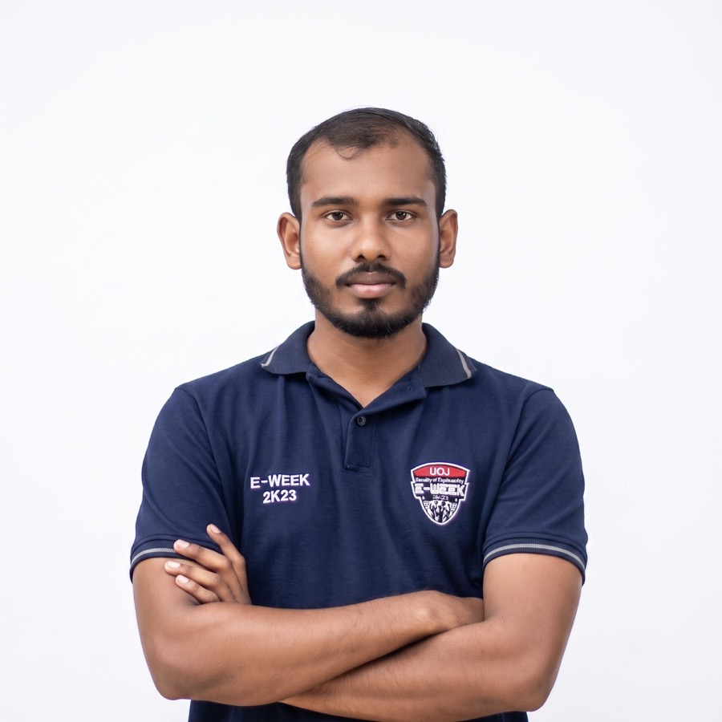

Digital Medical ID
AyuLink Healthcare
Kasun Jayawardena
AYU-200012345678
Verified
A digital healthcare ecosystem.
One QR-based medical identity links patient, doctor, pharmacy and channelling centre. AI triages symptoms in Sinhala or English against a real medical knowledge graph, finds the doctor and books the slot.
Patient · Doctor · Pharmacy · Channelling centre
Verified

Introduction
Undergraduate, Faculty of Engineering, University of Jaffna
Introduction
Challenges
AyuLink handles national identity, clinical records and prescriptions. The regulatory surface — not the software — is the hard part, and each instrument below is still work to be done.
Demo · 01
Ayu asks only for what the profile is still missing, in the patient's own language, and writes the answers back as structured records — never as loose free text a doctor has to interpret.
I don't know is recorded as unknown, never as "none"Demo · 02
The patient describes the problem by voice or text. The assistant grounds it against a real medical knowledge graph, explains the likely condition, finds a doctor who treats it, and books the slot.
APT-000123Demo · 03
A patient who is more comfortable in Sinhala never has to switch language. They describe the problem in their own words, and the assistant asks, explains and books in Sinhala too.
මට දවස් දෙකක ඉඳන් උණයි, ඇඟ රිදෙනවා "I've had a fever for two days, and my body aches"
Demo · 04
The doctor scans the patient's Medical ID and the clinical history opens — allergies first. The prescription is issued straight to that ID, where the patient and their pharmacy can both read it.
AYU-200012345678Demo · 05
The pharmacist scans the same Medical ID — or a single prescription's own QR, so the patient can show just one — and dispenses item by item against exactly what the doctor wrote.
15-minute undo window on every dispenseAyuLink — a digital healthcare ecosystem.
← → or scroll · F for fullscreen